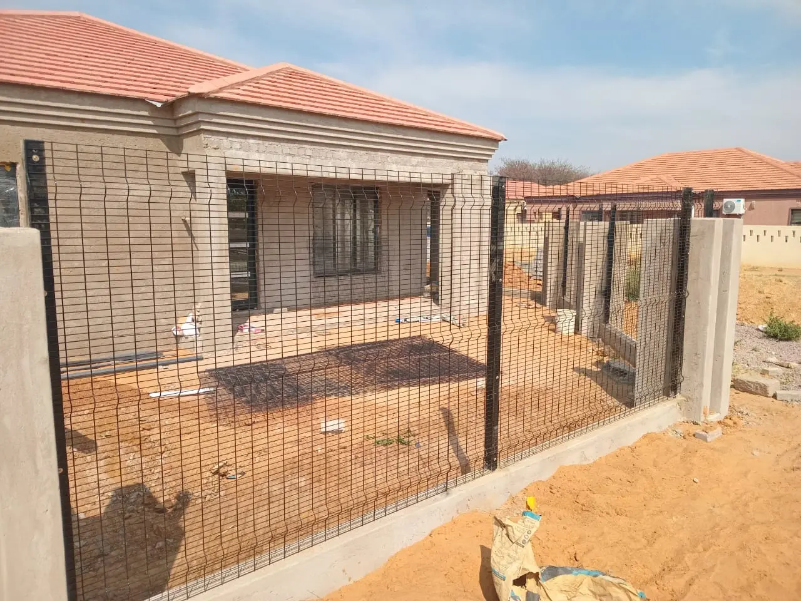
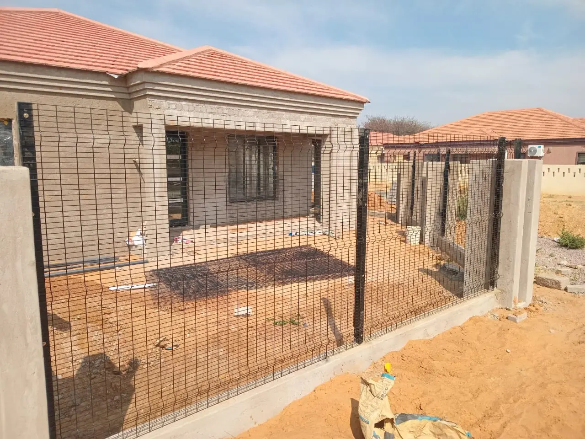

History
Moofar Pty Ltd began with a vision to unite the love of nature, adventure, and great company. We’ve grown from humble beginnings into a trusted name for landscaping, bush clearing, gardening, fencing, maintenance, nursery, and outdoor adventure. Our approach combines local expertise, safety, and enthusiasm for all things outdoors. Over the years, we’ve served homes, businesses, and explorers, making every encounter with us a great story to share.
Adventure Awaits You
Whether you’re after a white water rush or a peaceful day outdoors, our team is ready to guide you. Explore our selection of trips, services, and custom adventure packages, tailored for families, groups, and solo travelers.
Contact us today: +267 777723232 | +267 77085655 | Mookfara@gmail.com
 FM
FM
 MM
MM
Our Services
- White Water Rafting & Adventure Trips
- Landscaping, Bush Clearing & Gardening
- Fencing & Property Security
- Maintenance & Nursery Plant Supply
 
